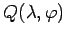
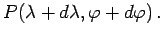
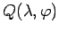
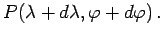
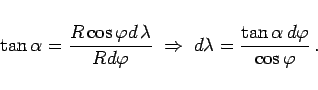
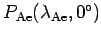
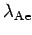

Inhalt Index DeskTop Bronstein

 Geometrie Sphärische Trigonometrie Berechnung sphärischer Dreiecke Loxodrome
Geometrie Sphärische Trigonometrie Berechnung sphärischer Dreiecke Loxodrome


Die Abbildung zeigt eine Loxodrome mit dem Kurswinkel  durch den laufenden Punkt  und den infinitesimal benachbarten Punkt 
durch den laufenden Punkt  und den infinitesimal benachbarten Punkt 
Das rechtwinklige sphärische Dreieck QCP kann wegen seiner differentiellen Ausmaße als ebenes Dreieck angesehen werden. Dann gilt:
|  | (3.246a) |
Unter Berücksichtigung des Umstandes, daß die Loxodrome durch den Punkt  verlaufen soll, ergibt sich daraus durch Integration die Gleichung der Loxodrome:
verlaufen soll, ergibt sich daraus durch Integration die Gleichung der Loxodrome:
Ist A speziell der Schnittpunkt  der Loxodrome mit dem Äquator, so folgt daraus:
Hinweis: Die Berechnung von  kann mit (3.251) erfolgen.